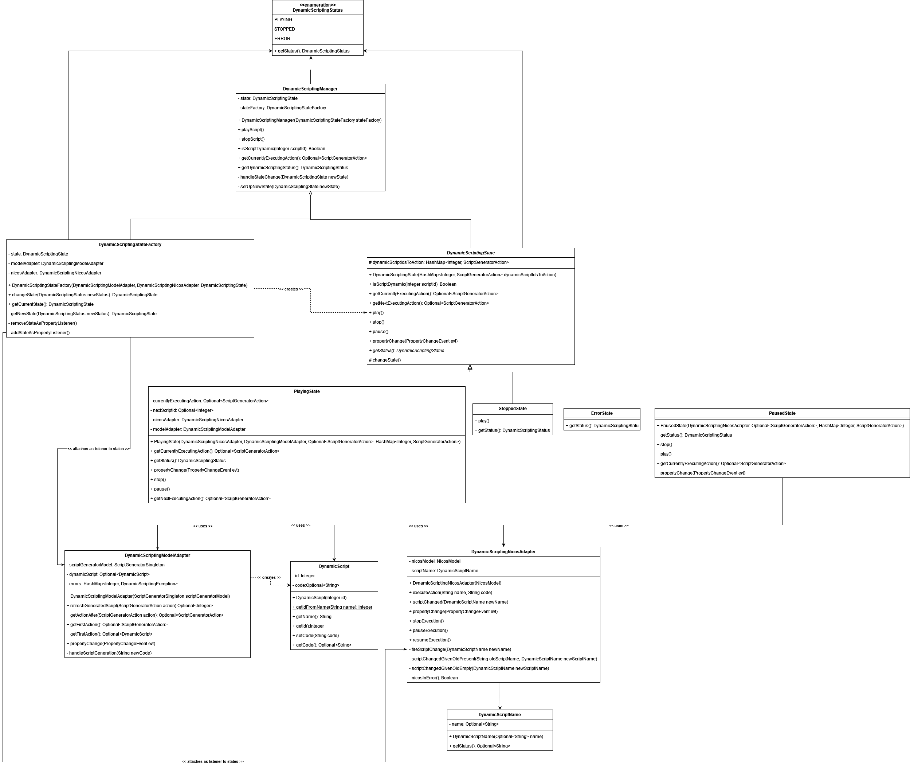

Dynamic Scripting
Dynamic scripting refers to requirements that allow a user to control the execution of actions whilst a script is running.
Design
Dynamic scripting can be in 4 possible states: Playing, Paused, Stopped, Error. The design makes use of four design patterns: adapter, state, observer (using the ModelObject and PropertyChangeListener Java classes) and factory (note: most articles actually talk about the abstract factory pattern we are using a more traditional factory pattern).
Three of these design patterns have been modified to fit our purpose. State, Factory and Observer are used in conjunction to achieve state changes that are reactive to changes in the script server and model changes (handled asynchronously with observers over py4j bridge). State changes are not done by a return value of a method but by firing a property change from a DynamicScriptingState. This property change is then received by the DynamicScriptingManager and the DynamicScriptingStateFactory is then used to create the next state.
The adapter pattern is used twice: once as an adapter to the NicosModel and the other as an adapter to the ScriptGeneratorSingleton.
Dynamic scripting also makes use of the dependency injection technique. See article for more details but this has allowed for ease of testing.

Implementation
Dynamic Scripting code is stored in the uk.ac.stfc.isis.ibex.scriptgenerator.dynamicscripting module of the ibex_gui. As well as code for the UI in the uk.ac.stfc.isis.ibex.ui.scriptgenerator.